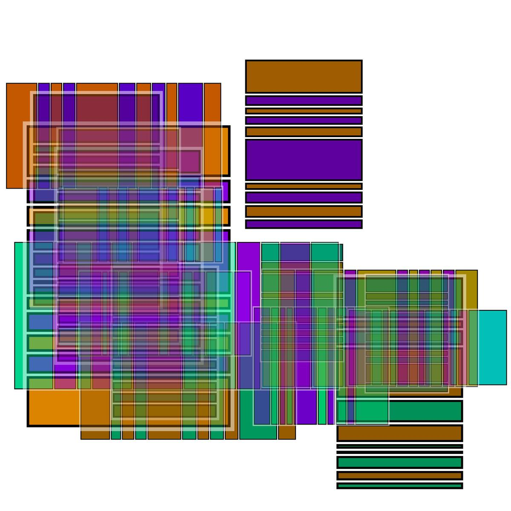
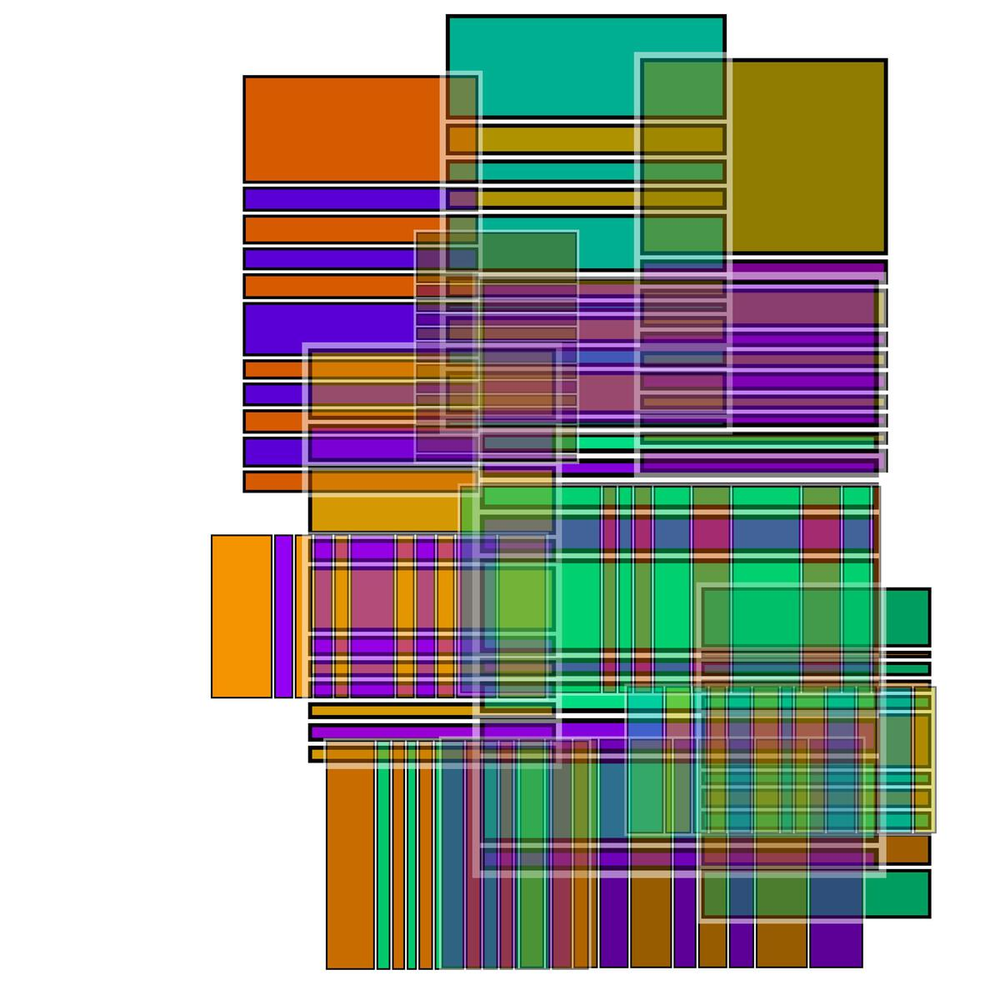
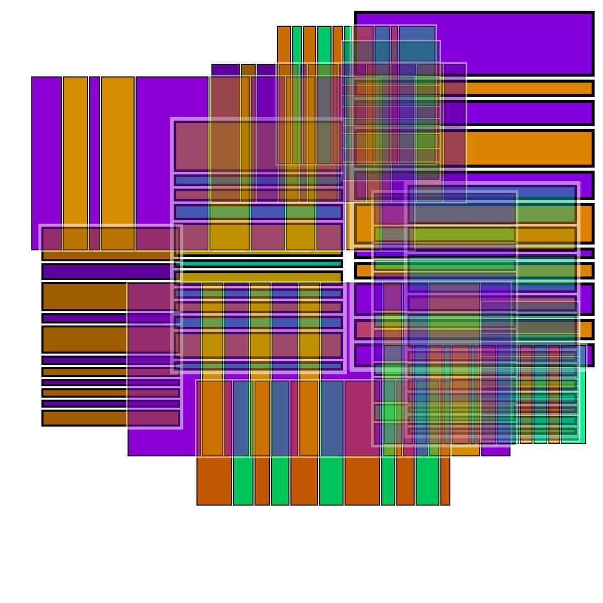

Tribute to Mondrian
In response to genuary 2021 prompt for January 9th I decided to make a little collaborative tribute to Piet Mondrian. A game serves as a guide to produce Mondrian's strips, a computer program was in charged of blending them.
The game consists in 4 levels, here you can enjoy an art piece for each. The melodies of levels 1, 2 and 3 were taken from Bela Bartok's mikrokosmos, the one of level 4 is a random melody instantly generated.
level 1 (24 Mondrian's strips)

level 2 (20 Mondrian's strips)
level 3 (12 Mondrian's strips)
level 4 (17 Mondrian's strips)
play again
If you still didn't play the game you can build your own Mondrian's strips. You access the code of the program in pixelative. You can find the code of the game is in azarte.